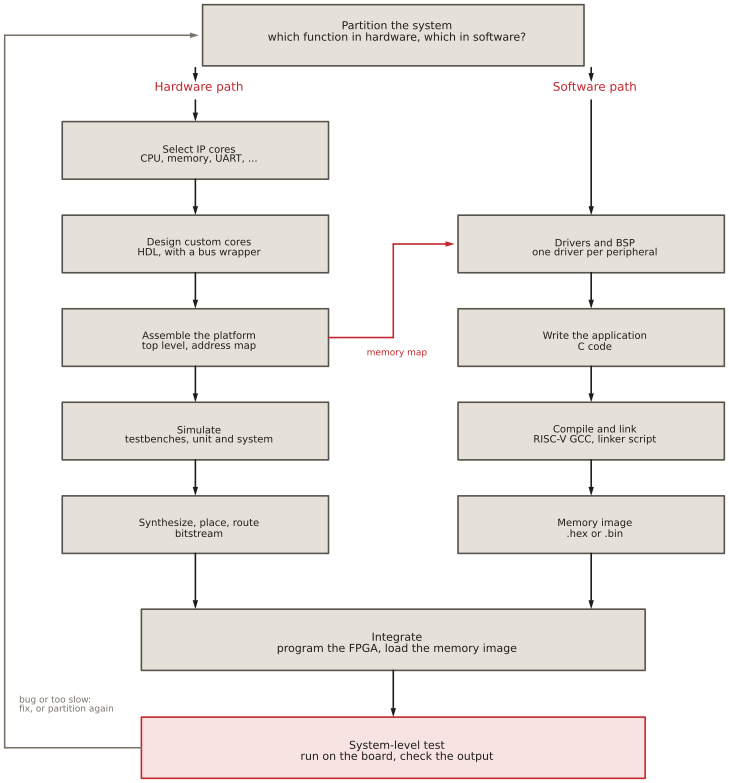
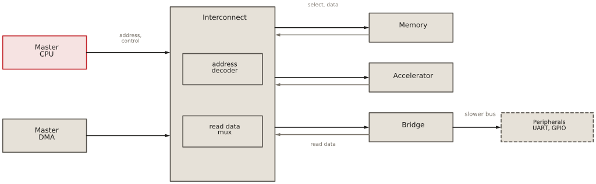
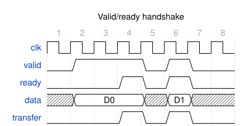
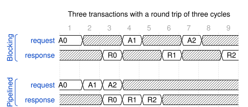
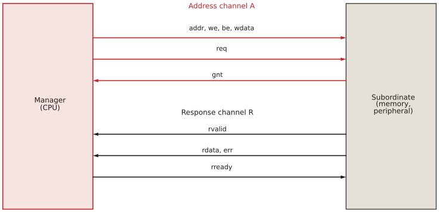
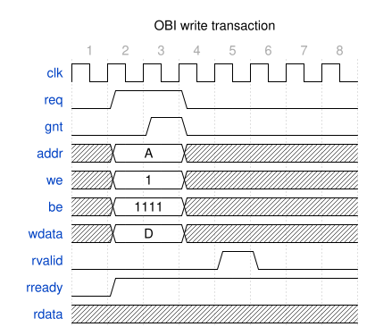
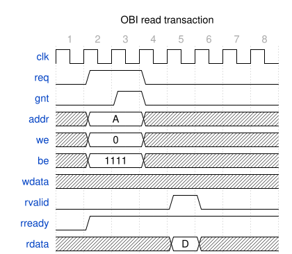

14 System on chip design
System on chip design
14.1 Goal for this week
- Know what a system on chip (SoC) is and how an FPGA SoC is developed
- Describe the parts of an on-chip bus system: masters, slaves, the decoder, and bridges
- Explain the valid/ready handshake as the basis of on-chip communication
- Read and draw the transactions of the OBI protocol, with its two channels and two handshakes
14.2 FPGA system on chip development
14.2.1 What is a SoC?
A system on chip (SoC) packages the basic parts of a computer into a single integrated circuit: a processor, some simple I/O peripherals, and often special-purpose hardware for tasks that a processor does slowly. So far we have built only the processor, HIPV, and its two ports to memory. A processor alone cannot do anything useful. It needs memory to hold the program and the data, and peripherals to communicate with the world. The SoC is the design in which these parts meet.
On an FPGA, we decide what the SoC contains. This is the main advantage over a fixed chip. We can tailor a soft processor, which is a processor described in HDL and placed in the fabric, as we did with HIPV. We can include only the peripherals that the application needs, and we can leave out the rest and save the resources. And for the computationally heavy part of an application, we can design a hardware accelerator and connect it next to the processor.
14.2.2 Hardware or software?
The freedom to choose has a consequence. Every function of the system can be implemented in software, which is flexible and easy to change but runs on a processor that executes it instruction by instruction, or in hardware, which is fast but fixed. Deciding which part goes where is the hardware/software partition, and it is the first design decision of an SoC. Because both sides are under our control, the hardware and the software can be developed at the same time, and each can be adapted to the other. This is HW/SW co-design.
We rarely build all the hardware ourselves. Many functions, such as a UART, an SPI or I2C controller, or an Ethernet MAC, are standard. They exist as IP cores (intellectual property cores): pre-designed components that we can integrate into the design. IP cores come from the FPGA vendor, from third parties, or from our own earlier projects.
14.2.3 The development flow

The development of an FPGA SoC follows a flow that we can read in Figure 14.1. It starts with the partition: for every function of the system, we decide whether it goes into hardware or into software. Then two paths run in parallel.
The hardware path has five steps. We first select the IP cores that the platform needs, such as the processor, the memory and the UART. Then we design the custom cores that no IP core provides, in an HDL, and give each one a bus wrapper so that it can be connected as a slave. In the third step we assemble the platform: a top level that connects all the cores to the interconnect, and an address map that gives every slave its region. We then simulate, with a testbench for each module and one for the whole system. The last step, synthesis, placement and routing, produces the bitstream, the file that configures the FPGA.
The software path has four steps. We write the drivers and the board support package. They need to know where every device is, and that is why the hardware path hands the memory map over to the software path. Then we write the application, compile and link it with a cross compiler, here for RISC-V, using a linker script that places the code and the data in the memory of the platform. The result is a memory image, a file with the bytes of the program.
The two paths meet in the integration: we program the FPGA with the bitstream, and load the memory image into the memory of the SoC. Then comes the system-level test, where we run the program on the board and check its output, for example the text that it sends over the UART. If the test fails, the cause can be anywhere: a bug in a core, in a driver, or in the application, or a partition that does not meet the speed that we need. The arrow back in the figure goes to the beginning for this reason. We fix the problem, or we move a function from software to hardware, and go through the flow again.
Vendor tools support the hardware path with a graphical integrator, such as the IP Integrator of Vivado. We connect the IP cores in a diagram, and the tool generates the HDL that describes the system. It also generates a hardware specification file that describes the platform for the software tools: the processor that it uses, the memory map, and the IP cores that it contains. In this course we write the top level ourselves in SystemVerilog, the same way as the structural top level hipv_core of the previous chapter. The result is the same, a description of the platform, but we see every connection.
The software side has two kinds of code. The system software is provided with the platform. The application software is the program that we write. Between them sits the board support package (BSP), a set of drivers and libraries that lets the application use the hardware platform. A device driver is the part that knows how to control one peripheral, which means that it is a translator between the application and the registers of the hardware.
14.3 On-chip communication
14.3.1 The interconnect
All the parts of a SoC have to talk to each other, and the wires and logic that make this possible are the interconnect. The on-chip interconnect connects the processor, the IP blocks, and the memory that sits on the chip. The off-chip interconnect connects the chip to everything outside it, such as external peripherals, external memory, and other chips.
The interconnect deserves attention, because it is more critical than it looks. Wires do not scale as well as transistors. As the technology improves, a transistor gets faster and smaller, but a long wire does not. As a result, the interconnect architecture is the most critical aspect of the performance of a modern system. By common estimates, up to half of the power of a system is consumed by the interconnect, and the largest part of the design effort is spent on it.
14.3.2 What we ask of the interconnect
Five properties decide whether an interconnect suits a design:
- Bandwidth is the amount of data that can be transferred in a given time.
- Latency is the time between a request and the response to it. Bandwidth and latency are not the same. A pipelined interconnect can have a high bandwidth and still take several cycles for each single access, as we will see with OBI.
- Master and slave are the two roles of the parties on the interconnect. The master initiates a communication, and the slave responds to the requests of the master. A CPU is a master, and a memory is a slave. Newer specifications, among them OBI, call them manager and subordinate.
- Concurrency is the ability of several masters to use the interconnect at the same time.
- Multiple clock domains appear when parts of the system run at different frequencies. The interconnect has to carry data safely between them.
14.3.3 Topology, protocol, and mapping
Designing an interconnect means answering three questions.
Topology is how the components are connected to each other. The simplest is a shared bus, to which all components are attached. More capable topologies are the crossbar switch, which can connect several pairs at once, the hierarchical bus, rings, and meshes.
Protocol is the set of rules that manage the communication: how a piece of data is transferred, and how access is prioritized when several masters want the interconnect at the same time.
Mapping is the placement of the components onto the interconnect: which component is attached to which bus, and which one is a master or a slave. A guiding idea is the principle of locality. Components that communicate often should be close to each other, so that the latency of their communication is small.
14.3.4 The parts of a bus system

A bus is a set of signals that is connected to several blocks. A basic bus has a clock and a reset for synchronization, an address bus that says which location the master wants, data buses for the data that is read or written, and control signals that manage the operation, such as whether it is a read or a write, or which slave is selected.
A basic SoC (Figure 14.2) is made of five kinds of components:
- A master initiates the communication. The processor is a master. A system may have several masters, for example a CPU and a DMA engine that moves data without involving the CPU.
- A slave responds to the requests of a master. Memories and peripherals are slaves, and there are usually many of them.
- The decoder looks at the address of a request and selects the one slave that the address belongs to. Every slave has its own range of the address space, and the decoder is where the memory map becomes hardware.
- The read data multiplexer does the opposite for the response. Many slaves can return data, but the master reads only one value, so the multiplexer connects the data of the selected slave to the master.
- A bridge connects two different buses, for example a fast bus for memories and a slower one for peripherals. A bridge may convert the protocol of one bus to the protocol of the other, convert the width of the data, and cross between two clock domains.
The decoder and the multiplexer are the system-level logic of the interconnect. Its design is where the choices of topology, protocol, and mapping meet.
14.3.5 Interface and protocol
Every connection between two blocks has two parts. The interface is the set of signals that connect the blocks. The protocol is the set of rules that define how those signals are used, for example how data is transferred. Two blocks can have the same interface and still not understand each other, if their protocols differ.
The most common protocol in on-chip communication is the handshake, which we already know from the stages of the HIPV pipeline. The sender raises valid (in other protocols called request or enqueue) to say that it has data. The receiver raises ready (acknowledge or dequeue) to say that it can accept data. The data moves at the clock edge where both are 1. The great strength of the handshake is that the two sides work at their own pace: a slow receiver simply holds ready low, and a sender with nothing to say holds valid low.

valid in cycle 2, but the receiver is not ready until cycle 4, so D0 is transferred at the end of cycle 4. D1 is transferred in cycle 6, where ready was already high.
Figure 14.3 shows two transfers. In cycle 2 the sender raises valid and presents D0. The receiver is not ready, so the sender waits and keeps both valid and the data stable. In cycle 4 the receiver raises ready, both signals are 1, and D0 is transferred at the end of the cycle. In cycle 5 the sender has nothing to send. In cycle 6 the receiver is ready and the sender offers D1, so both signals are 1 in the same cycle and the transfer happens at once. Neither side had to know how fast the other is, and that is why the handshake is so widely used.
14.4 The OBI protocol
14.4.1 Why OBI?
We now describe the protocol that HIPV already uses on its two memory ports. In the IFU and LSU chapters we looked at it from the CPU side, with the signals that those units needed. Here we restate it as a general protocol, for any manager and any subordinate.
The Open Bus Interface (OBI) is an open specification for on-chip communication. It was designed as a simpler alternative to protocols such as AXI and Wishbone. Two properties describe it. It is synchronous, which means that all communication is timed by the clock. And it is pipelined, which means that several transactions can be in flight at the same time. This improves the throughput without shortening the time that a single transaction needs.
14.4.2 Transactions: blocking and pipelined

Every transaction on the SoC has two phases: a request from the manager, and a response from the subordinate. There are two ways to organize the transactions (Figure 14.4).
In the blocking model, a new transaction can start only after the previous one has completed. The manager stalls after it issues a request and cannot continue until the response arrives. This is easy to build, because nothing has to be tracked, but the throughput is low: one transaction per round trip. In the figure, a round trip takes three cycles, so three transactions need nine.
In the pipelined model, the manager can issue new requests without waiting for the responses to earlier ones. Requests and responses use separate channels, so they can overlap in time. The same three transactions now finish after five cycles, and once the pipeline is full, the throughput is one transaction per cycle. The latency of each transaction is still three cycles. Pipelining improves only the throughput.
A general pipelined protocol needs two more things. Each request carries a unique ID, so that its response can be matched to it, and a reorder buffer puts the responses back in the order of the requests if the subordinate returns them out of order. OBI keeps this simple by returning the responses in the order of the requests, so a basic OBI manager needs neither.
14.4.3 Channels and signals

OBI has two channels (Figure 14.5). The address channel A carries everything that defines a request, and the response channel R carries everything that returns.
The signals of the address channel are:
| Signal | Meaning |
|---|---|
addr |
address of the target location, generated by the manager |
we |
write enable: 1 for a write request, 0 for a read request |
wdata |
the data to write into the subordinate |
be |
byte enable: which bytes of wdata are valid |
req |
request valid: the manager has put a valid request on the channel |
gnt |
grant: the subordinate is ready to accept the address and the write data |
The byte enable has one bit for each byte of the 32-bit word, and bit i enables byte i:
be |
Byte 3 | Byte 2 | Byte 1 | Byte 0 |
|---|---|---|---|---|
0001 |
no | no | no | yes |
0100 |
no | yes | no | no |
0011 |
no | no | yes | yes |
1111 |
yes | yes | yes | yes |
The signals of the response channel are:
| Signal | Meaning |
|---|---|
rdata |
the data that a read returns |
err |
the subordinate signals that the transaction failed |
rvalid |
response valid: the subordinate has a response |
rready |
the manager is ready to accept the response |
14.4.4 Write and read transactions

req and the request signals in cycles 2 and 3. The subordinate grants in cycle 3, after one wait cycle, and signals that the write is complete with rvalid in cycle 5.
A write transaction (Figure 14.6) has three steps.
- Address phase. The manager drives the address and the write signals,
addr,we,beandwdata, onto channel A and raisesreqto say that the request is valid. In the figure this starts in cycle 2. - Grant. The address phase completes in the cycle in which the subordinate raises
gnt, because that is the signal for “I have accepted the address and the write data”. Until then, the manager holdsreqand all request signals unchanged. In the figure the subordinate needs one wait cycle, so the grant comes in cycle 3. The manager is now free to issue the next request, even though the response to this one is still pending. - Response phase. Some cycles after the grant, the subordinate raises
rvalid, which means that the write has completed. In the figure this is cycle 5.
We assume that rready is always 1, so the response completes in the cycle of rvalid. In general, the response completes only in a cycle in which both rvalid and rready are 1.

we = 0. In the response phase, rvalid marks the cycle in which rdata is valid.
A read transaction (Figure 14.7) follows the same flow. The only difference is in the response phase: rvalid now also says that the value on rdata is valid, and the manager must sample it in that cycle. In all other cycles, rdata carries no information. The signal wdata is not used in a read and can have any value.
14.4.5 Two handshakes
OBI uses the valid/ready handshake twice, once per channel.
- On channel A, the handshake is between
reqandgnt. The manager plays the sender withreqas its valid, and the subordinate plays the receiver withgntas its ready. Oncegntis 1 whilereqis 1, the manager knows that the request has been accepted, and it can proceed to the next transaction. - On channel R, the roles are reversed. The subordinate is the sender, with
rvalid, and the manager is the receiver, withrready. The response completes when both are 1 in the same cycle. In our SoC,rreadyis always 1, because the manager can always take the response.
The two handshakes are independent, and this is what makes the pipelining possible. The address phase of a new transaction runs on channel A, while the response to an older one runs on channel R. In Figure 14.4 the requests A1 and A2 travel at the same time as the responses R0 and R1.
Think of a lecture. The professor calls on you and asks a question, which is req. You nod to show that you understood, which is gnt. The professor may now think of the next question. When you are ready to answer, you check that the professor is listening, which is rready. You give your answer, which is rvalid with the data on rdata, and the transaction is complete.
14.4.6 OBI in HIPV
HIPV is an OBI manager, and it implements the subset of the protocol that a simple core needs. The instruction port of the IFU only reads, so it has req, addr, gnt, rvalid and rdata. The data port of the LSU has the full request side, with we, be and wdata. Neither port has rready or err. They behave as if rready were always 1 and no transaction ever failed. The names carry the stage suffix, so that ObiReqF is the req of the IFU, and ObiGntM is the gnt of the LSU.
Each of the two ports is one manager. The rest of the SoC, the interconnect with its decoder and multiplexer and the subordinates behind it, is what we design next.
14.5 Summary
A system on chip puts the processor, the memory, the peripherals and the accelerators on one chip. On an FPGA, we choose each of them, and the design process starts with a partition of the functions into hardware and software, followed by parallel development of both sides, integration, and a system-level test.
The parts communicate over an interconnect. Its basic components are the masters that initiate transactions, the slaves that respond, a decoder that selects the slave by address, a multiplexer that returns the data of the selected one, and bridges to other buses. Its quality is judged by bandwidth, latency, concurrency, and the handling of clock domains. At the bottom of every protocol is the valid/ready handshake.
OBI uses the handshake twice. The address channel carries the request with req and gnt, and the response channel carries the answer with rvalid and rready. Because the channels are independent, transactions can be pipelined, which raises the throughput to one transaction per cycle. The two ports of HIPV already speak this protocol, and in the next step, we connect them to memories and peripherals.